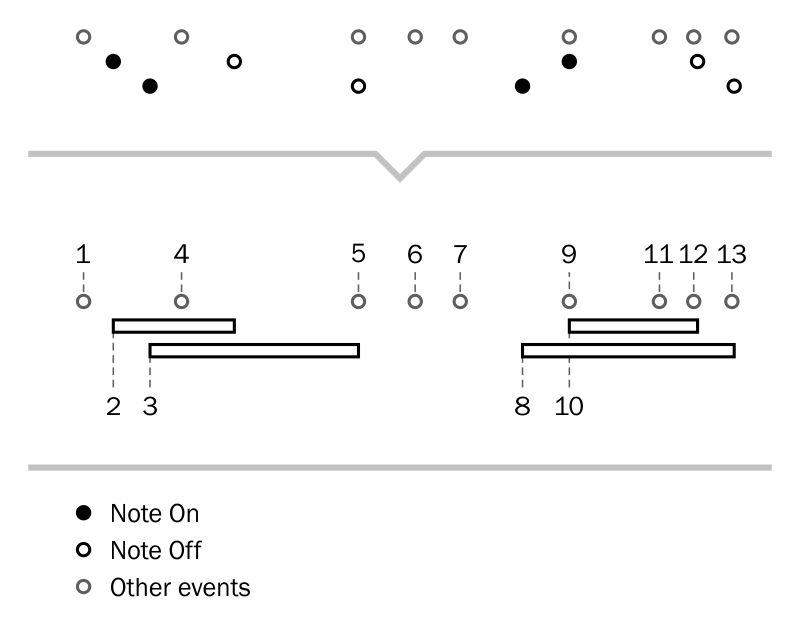
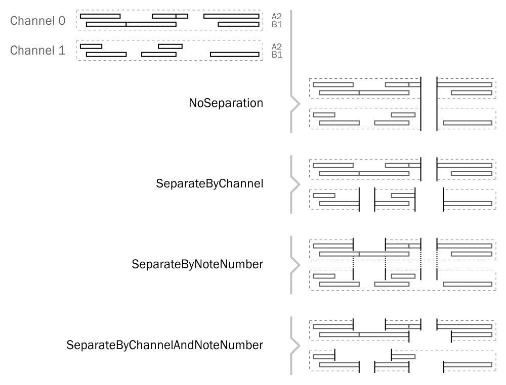
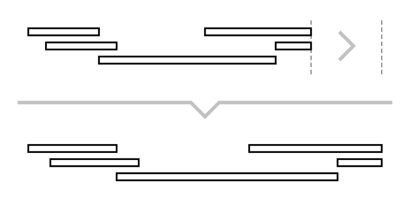

To effectively manage note events DryWetMIDI provides the NotesManager class to help with this. Instead of messing with Note On/Off events this manager allows to operate by Note objects.
using (var notesManager = new NotesManager(trackChunk.Events))
{
NotesCollection notes = notesManager.Notes;
var cSharpNotes = notes.Where(n => n.NoteName == NoteName.CSharp);
notes.Add(new Note(NoteName.A, 4)
{
Time = 123,
Length = 456,
Velocity = (SevenBitNumber)45
});
}
Note has following properties:
TimeLengthNoteNumberVelocityOffVelocityChannelNoteNameOctave
Please read general information about events managers prior to use NotesManager.
To get collection of all notes being managed by the current NotesManager you need to use Notes property which returns NotesCollection. NotesCollection has methods for adding and removing notes and also can be enumerated since it implements IEnumerable<Note>. In addition to these methods there are extension ones contained in TimedObjectUtilities and LenghthedObjectUtilities. For example, you can get all notes in the first track chunk of a MIDI file that end at 20 seconds from the start of the file and get length of the first found note in hours:minutes:seconds format:
TempoMap tempoMap = midiFile.GetTempoMap();
using (var notesManager = midiFile.GetTrackChunks().First().ManageNotes())
{
var notesEndedAt20Seconds = notesManager.Notes
.EndAtTime(new MetricTimeSpan(0, 0, 20),
tempoMap);
var firstNoteLength = notesEndedAt20Seconds.First()
.LengthAs<MetricTimeSpan>(tempoMap);
}
Read the Time and length page to learn more about custom time and length.
As you can see there is another way to get an instance of the NotesManager – through the ManageNotes extension method. This method and another useful ones are placed in NotesManagingUtilities. For example, to get all notes contained in a MIDI file you can write:
IEnumerable<Note> notes = midiFile.GetNotes();
Special utilities
There are several special utility methods that can be useful in real work with notes.
GetTimedEventsAndNotes
IEnumerable<ITimedObject> GetTimedEventsAndNotes(this IEnumerable<TimedEvent> timedEvents)
The GetTimedEventsAndNotes is an extension method for IEnumerable<TimedEvent> placed in GetTimedEventsAndNotesUtilities class. This method iterates through the collection of TimedEvent returning Note for Note On / Note Off event pairs and original TimedEvent for all other events. The image below illustrates work of this method:

GetNotesAndRests
IEnumerable<ILengthedObject> GetNotesAndRests(this IEnumerable<Note> notes,
RestSeparationPolicy restSeparationPolicy)
The GetNotesAndRests is an extension method for IEnumerable<Note> placed in GetNotesAndRestsUtilities class. This method iterates through the specified collection of Note returning instances of Note and Rest where rests calculated using the specified policy. The policy is specified via restSeparationPolicy parameter of RestSeparationPolicy type which has the following values:
| Value | Description |
|---|---|
NoSeparation |
Rests should be constructed only when there are no notes at all on any channel. |
SeparateByChannel |
Rests should be constructed individually for each channel ignoring note number. |
SeparateByNoteNumber |
Rests should be constructed individually for each note number ignoring channel. |
SeparateByChannelAndNoteNumber |
Rests should be constructed individually for each channel and note number. |
The image below illustrates how this policy affects rests building:

ResizeNotes
void ResizeNotes(this IEnumerable<Note> notes,
ITimeSpan length,
TimeSpanType distanceCalculationType,
TempoMap tempoMap)
void ResizeNotes(this IEnumerable<Note> notes,
double ratio,
TimeSpanType distanceCalculationType,
TempoMap tempoMap)
Resizes group of notes to the specified length or by the specified ratio treating all notes as single object. distanceCalculationType defines the type (and therefore units) of distances calculations.
The following image shows the process in action:
